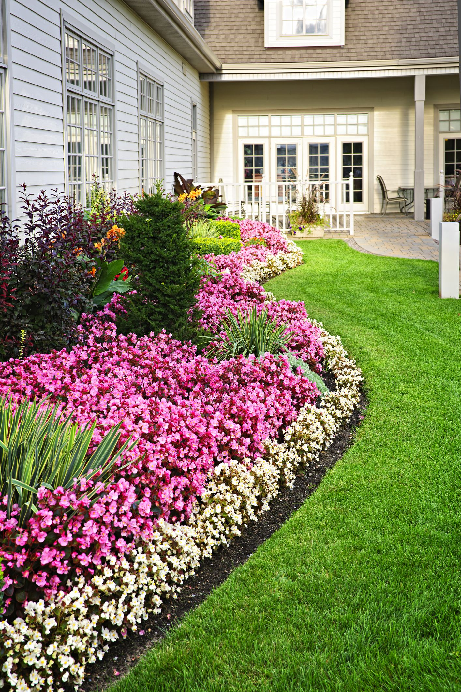
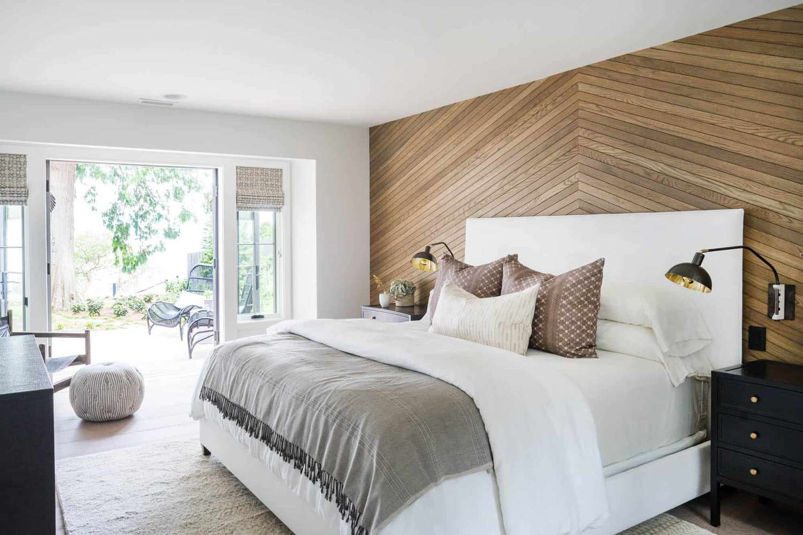
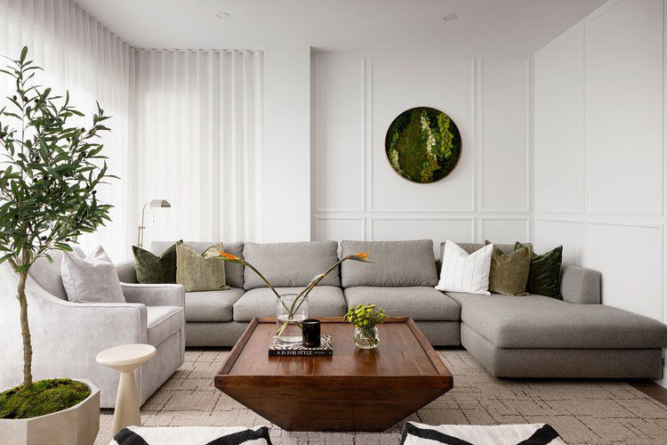

Garden Decor
If your house features an open space or balcony, you can own a mini garden. You can decorate it with the alluring garden decoration items such as garden figurines, pots and planters, artificial flowers, artificial grass, bird houses, decorative pebbles, and outdoor lighting.
- 
bedroom Decor
Bedroom decoration can be a tedious task because if not set right, it can mess up with your sleeping and dressing. Pepperfry has a wide range of bedroom furniture and bedding. You can choose from different bed types, such as upholstered, sofa cum bed, trundle, loft, bunk, novelty, and others. There are even cribs available for the kid's room. Bedding options include mattresses, duvets, comforters, mattress protectors, duvet covers, pillows, and bed wedges. Lighting plays an important role; the placement of bedside lamps should be proper. You can even install wall sconces or hanging lights to give it a luxe touch. Choose from bedside tables, study tables, and bean bags to perfectly match your theme.
- 
kitchen decor
Browse through a lavish collection of homeware to set up your kitchen. You can choose from products such as dinner table, utensil holders, kitchen baskets, everyday glasses, pitchers and decanters, mason jars, coasters, salt and pepper shakers, table linen, and so on. Decorate your kitchen with subtle lighting and simple wall paintings to give it a chic look.

livingroom Decor
You can style up your living room with plush decor such as recamiers, lounge chairs, end tables, console tables, coffee tables, cabinets, shoe racks, show pieces, planters, indoor fountain, wall art, & photo frames. Add a chandelier, hanging lantern, or any suitable lighting, and you're ready to go.
- 